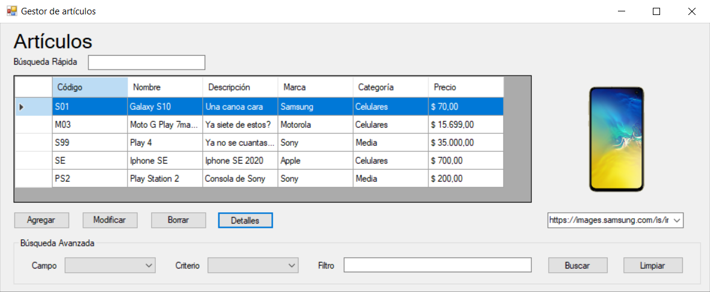

Projects & contact
Restaurant Ordering System
Web application developed in C# and ASP.NET WebForms for managing restaurant orders, including configurable combos, individual item customization, comments and modifications, with full order persistence in a relational database. The project focuses on business logic, state management, and accurate handling of real-world ordering flows.
Technologies: C# ASP.NET WebForms SQL Server ADO.NET
Catalog
This project was developed for the “C# Programming · Level 2” course. The tools used include GitHub, .NET, ADO.NET, C#, and SQL Server. The application allows adding, updating, and deleting items, as well as managing their corresponding categories and brands. It also supports search filtering and image upload, either locally or via URL.
View on GitHubGitHub

My GitHub profile, where I regularly update repositories with my projects and academic work.
View